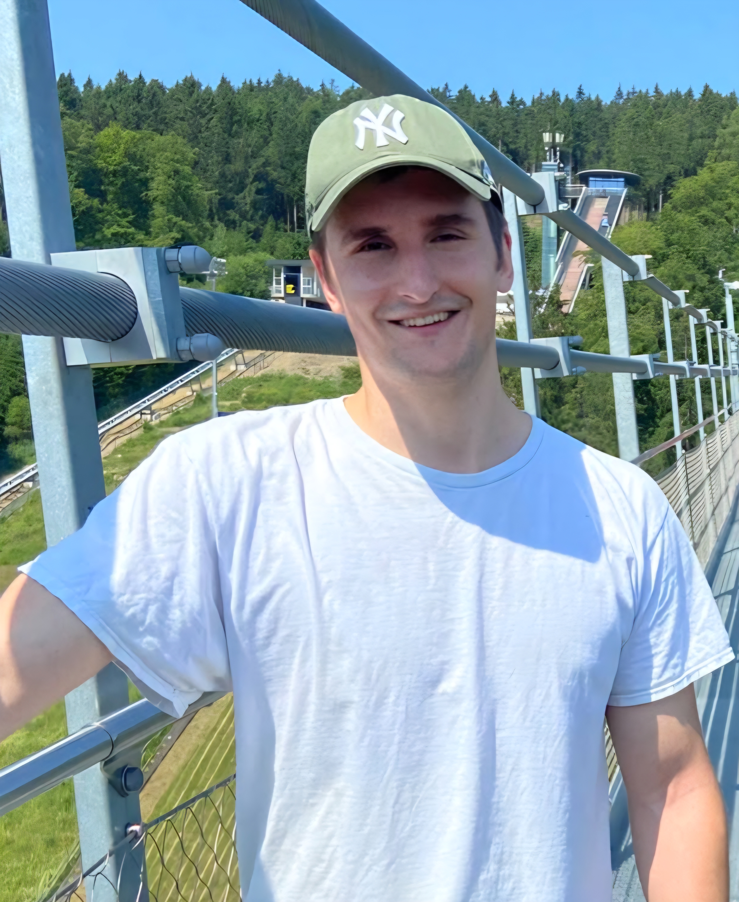
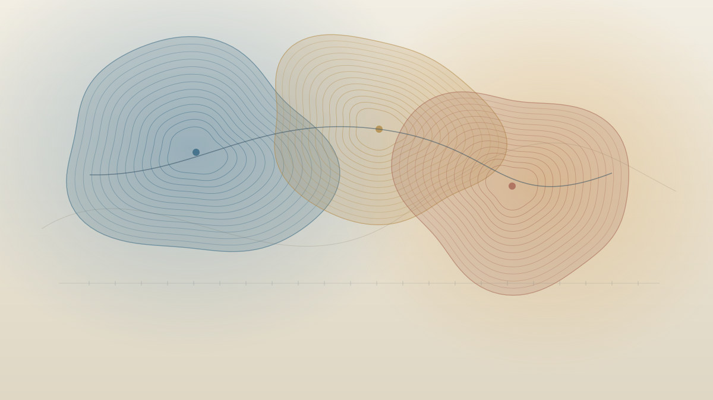
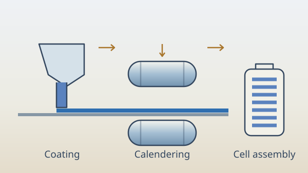
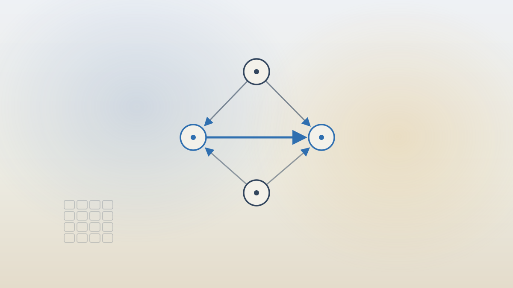
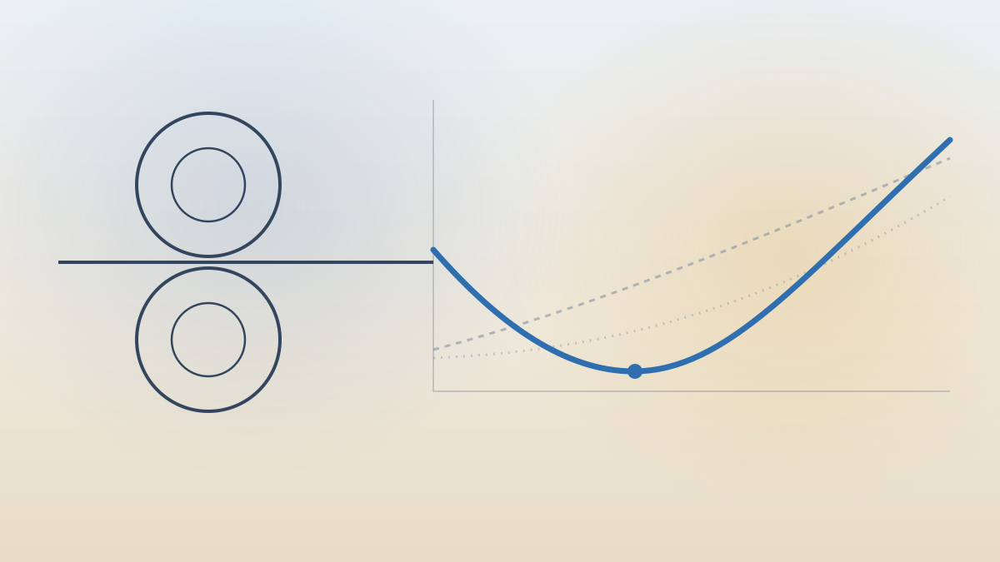
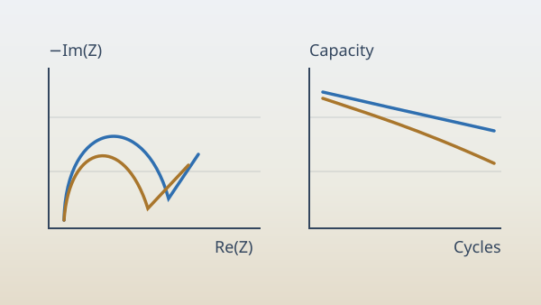
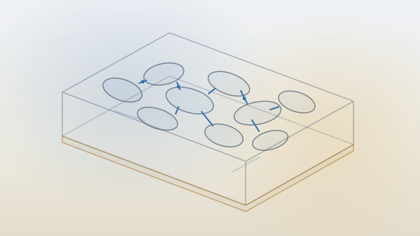
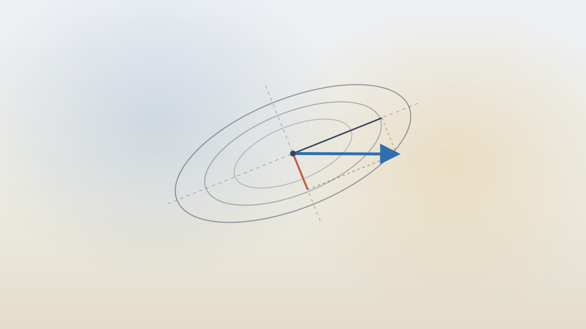
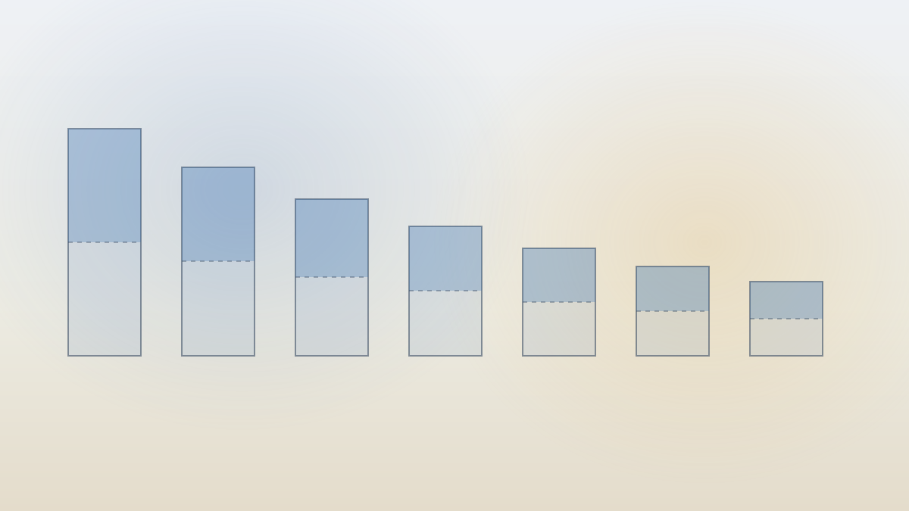

Continual learning · preprint
Interference and retention
A geometric account of forgetting, tested in a fixed feature space.
Doctoral researcher
for . I develop machine-learning methods that connect , , and . At VARTA and TU Braunschweig, my work spans , , and for changing materials and operating conditions. I work on this because reliable ML for battery manufacturing directly accelerates the transition to sustainable energy.
Industrial PhDVARTA Microbattery GmbHTU Braunschweig
Open to collaborations on continual learning for process modelling and data-efficient ML in battery manufacturing.


I use machine learning to turn measurements into predictions that support experimental and manufacturing decisions.
Explore the research software ↗
Electrode processing is where materials, equipment, and cell behaviour meet. My focus is connecting what happens on the line to what ends up inside the cell.
See the manufacturing work ↗
Measurements become useful when they can be traced to a material, a process state, and an outcome. That context helps a model support decisions on the line.
From measurements to decisions ↗
Physical models give learning methods useful constraints: transport paths, particle contacts, and how those structures change under processing.
Explore the thermal model ↗
Cycling and impedance data reveal how a cell responds. I use that response to connect manufacturing history with electrochemical behaviour.
Explore the experimental background ↗
I work with coating, calendering, and semi-dry processing, alongside the experiments needed to qualify those routes.
See the electrode-development work ↗
A manufacturing model needs to adapt as conditions change while preserving useful knowledge from earlier data.
Explore the geometry of forgetting ↗I connect processing conditions to the structure they create and the properties that follow, rather than modelling each step in isolation.
Follow the process–property connection ↗Continual learning, electrode transport and decision-making agents.
A geometric account of forgetting, tested in a fixed feature space.

How scoring rules and bargaining position shaped a game-playing agent.
A process-dependent thermal closure for graphite and NMC electrodes.
From research code to autonomous agents.
julius@lab ~/zehner-electrode-thermal
PYTHONPATH=src python -qfrom electrode_thermal import ( lambda_eff_coating, invert_porosity, LAMBDA_GRAPHITE, LAMBDA_ELECTROLYTE,)for psi in (0.30, 0.35, 0.40): wet = lambda_eff_coating(psi, 17e-6, LAMBDA_GRAPHITE, LAMBDA_ELECTROLYTE, False) dry = lambda_eff_coating(psi, 17e-6, LAMBDA_GRAPHITE) print(f"psi={psi:.2f} wet={wet:.4f} dry={dry:.4f} W/(m K)")measured = float(lambda_eff_coating( 0.32, 17e-6, LAMBDA_GRAPHITE, LAMBDA_ELECTROLYTE, False))recovered = float(invert_porosity( measured, 17e-6, LAMBDA_GRAPHITE, LAMBDA_ELECTROLYTE, False))print(f"recovered porosity: {recovered:.6f}")assert abs(recovered - 0.32) < 1e-6print("inverse round-trip: OK")from electrode_thermal import dlambda_dpsislope = float(dlambda_dpsi( 0.35, 17e-6, LAMBDA_GRAPHITE, LAMBDA_ELECTROLYTE, False))print(f"d(lambda)/d(psi) = {slope:.4f}")exit()julius@lab ~/T2T
python run.py demopython -m unittest test_systempython -qfrom pathlib import Pathimport evaluatereport = evaluate.published_policies(Path("published_results.json"))for name, score in report["policies"].items(): print(f"{name:8} {score['successes']:3}/{score['episodes']} {score['success_rate']:.2%}")exit()julius@lab ~/chargewise
uv run --locked python -qfrom pathlib import Pathimport jsonfrom backend.app.models import StationConfigfrom backend.app.services.csv_validator import validate_sessions_csv, validate_prices_csvfrom backend.app.services.optimizer import optimize_schedulesource = Path("data/demo/prepared")sessions = validate_sessions_csv((source / "sessions.csv").read_bytes())prices = validate_prices_csv((source / "prices.csv").read_bytes())station = StationConfig.model_validate_json((source / "station.json").read_text())def progress(stage, status): print(f"{stage}: {status}")result = optimize_schedule(sessions, station, prices, report=progress)print(json.dumps({ "solver_status": result.solver_status, "validated": result.validated, "peak_kw": round(result.metrics.peak_power_kw, 4), "delivered_kwh": round(result.metrics.delivered_kwh, 4), "unserved_kwh": round(result.metrics.unserved_kwh, 4),}, indent=2))exit()Pick a rabbit hole.
Latest / Fresh from the notebook
 8 November 2026 · Philosophy & inferenceGetting Less Wrong Without Becoming CertainReading Yudkowsky's Sequences alongside Hume, with Bayesian updating, human utility functions, model uncertainty and the premises behind Roko's basilisk.Read the notes ↗
8 November 2026 · Philosophy & inferenceGetting Less Wrong Without Becoming CertainReading Yudkowsky's Sequences alongside Hume, with Bayesian updating, human utility functions, model uncertainty and the premises behind Roko's basilisk.Read the notes ↗
 1 November 2026 · Robotics & languageText to TrajectoryHow grounding, task programs, motion planning and learned robot policies turn language into movement, with a focused evaluation proposed for Visual Components.Read the notes ↗
1 November 2026 · Robotics & languageText to TrajectoryHow grounding, task programs, motion planning and learned robot policies turn language into movement, with a focused evaluation proposed for Visual Components.Read the notes ↗
 4 October 2026 · Battery manufacturingPrice Wars: East vs. West Battery Production and the SynBatt ResponseOne animated timeline of manufacturers and factory plans. Grouped company cases connect funding, ramp-up, and customer demand, alongside twenty price-gap mechanisms and the SynBatt response.Read the notes ↗
4 October 2026 · Battery manufacturingPrice Wars: East vs. West Battery Production and the SynBatt ResponseOne animated timeline of manufacturers and factory plans. Grouped company cases connect funding, ramp-up, and customer demand, alongside twenty price-gap mechanisms and the SynBatt response.Read the notes ↗
 26 July 2026 · MaterialsLithium Dendrites Are Batteries' DandelionsA lithium-and-sodium dendrite model linking defect geometry, fracture and electronic leakage, with an explicit sodium example and unresolved current-scale mismatch.Read the notes ↗
26 July 2026 · MaterialsLithium Dendrites Are Batteries' DandelionsA lithium-and-sodium dendrite model linking defect geometry, fracture and electronic leakage, with an explicit sodium example and unresolved current-scale mismatch.Read the notes ↗
 18 October 2026 · AI researchWhen Do AI Outputs Tip?One attention head tested across sixteen held-out Qwen2.5-0.5B prompts, a mathematical response clock, and cache edits that hold current answers fixed.Read the notes ↗
18 October 2026 · AI researchWhen Do AI Outputs Tip?One attention head tested across sixteen held-out Qwen2.5-0.5B prompts, a mathematical response clock, and cache edits that hold current answers fixed.Read the notes ↗
 13 September 2026 · Reading notesReading ConvMem: Long-Context Reasoning as a Summary TreeConvMem reads a long document as a tree of question-conditioned summaries instead of a chain of memory updates, which cuts the path from a fact to the answer from linear to logarithmic. Notes on the method, results and cost, and seven ideas for a path shorter than logarithmic.Read the notes ↗
8 November 2026 · Philosophy & inferenceGetting Less Wrong Without Becoming CertainReading Yudkowsky's Sequences alongside Hume, with Bayesian updating, human utility functions, model uncertainty and the premises behind Roko's basilisk.Read the notes ↗
13 September 2026 · Reading notesReading ConvMem: Long-Context Reasoning as a Summary TreeConvMem reads a long document as a tree of question-conditioned summaries instead of a chain of memory updates, which cuts the path from a fact to the answer from linear to logarithmic. Notes on the method, results and cost, and seven ideas for a path shorter than logarithmic.Read the notes ↗
8 November 2026 · Philosophy & inferenceGetting Less Wrong Without Becoming CertainReading Yudkowsky's Sequences alongside Hume, with Bayesian updating, human utility functions, model uncertainty and the premises behind Roko's basilisk.Read the notes ↗
 27 September 2026 · AI researchHow to (Not) Reinvent the Wheel With JeffJev, Jeff, and typed decisions: shared representations, task-specific heads, calibrated probabilities, and a concrete policy for when a manufacturing model acts or requests review.Read the notes ↗
1 November 2026 · Robotics & languageText to TrajectoryHow grounding, task programs, motion planning and learned robot policies turn language into movement, with a focused evaluation proposed for Visual Components.Read the notes ↗
27 September 2026 · AI researchHow to (Not) Reinvent the Wheel With JeffJev, Jeff, and typed decisions: shared representations, task-specific heads, calibrated probabilities, and a concrete policy for when a manufacturing model acts or requests review.Read the notes ↗
1 November 2026 · Robotics & languageText to TrajectoryHow grounding, task programs, motion planning and learned robot policies turn language into movement, with a focused evaluation proposed for Visual Components.Read the notes ↗
 25 October 2026 · Energy & optimizationChargeWise Fits the Fleet to the GridBuilding ChargeWise AI with physical charging constraints, independent schedule checks, the original hosted application, Nemotron tools, and a forecasting follow-up.Read the notes ↗
25 October 2026 · Energy & optimizationChargeWise Fits the Fleet to the GridBuilding ChargeWise AI with physical charging constraints, independent schedule checks, the original hosted application, Nemotron tools, and a forecasting follow-up.Read the notes ↗
I contributed a task to terminal-bench-science, a science-focused task set built on Terminal-Bench, the benchmark for evaluating AI agents on hard, realistic command-line tasks (arXiv:2601.11868).
Does your process model struggle when materials or settings change? I’d be interested in exploring what your process logs and electrode measurements can tell us, and how to evaluate models under those changes.
Working on continual learning or physics-informed electrode models? I’d welcome a joint study, a shared dataset, or a comparison that tests where our methods break.
I’d be happy to collaborate, share data, or discuss experimental results. If you’re interested, feel free to email me with a short description of your setup and what you’re trying to achieve.
Leave me a message here.